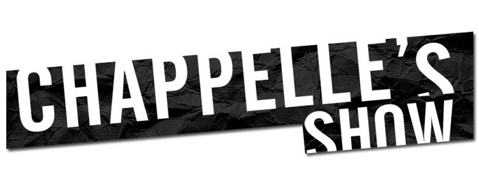

Chappelle's Show
Chappelle creo en 2003 la comedia Chappelle's Show, presentando el programa y protagonizando la mayoria de sus sketches. Junto a Neal Brennan y Michele Armour fueron los productores ejecutivos del programa. La serie se estreno el 22 de enero de 2003 en la cadena de television por cable estadounidense Comedy Central y cuenta con 2 temporadas. El programa obtuvo tres nominaciones al Emmy y se convirtio en el programa de television mas vendido en la historia del DVD.
Personajes
Tron Carter
En esta mirada satirica al sistema de justicia penal. Como una parodia de "La ley y el orden", la parodia se teje a partir de las historias paralelas de Tron y un hombre blanco adinerado, ambos acusados de trafico de drogas y considerados de manera muy diferente por el sistema de justicia penal.
Tyrone Biggums
Chappelle interpreta a un adicto de voz chillona reconocido por sus labios blancos y llenos de ampollas. y rascado constante. Su primera aparicion fue en el segundo episodio de la primera temporada.
"Silky" Johnson
Un notorio enemigo de los jugadores, gano el ficticio "Hater of the year" dos veces (una de las cuales fue por llamar a una amenaza de bomba en las Olimpiadas Especiales).
Chuck Taylor
El presentador "blanco" principal en el ficticio programa de noticias "News 3".
Leonard Washington
Washington aparecio por primera vez en el sketch de la primera temporada "Trading Conyuges" , en el que actuo como patriarca de una familia blanca durante un mes. En particular, al entrar en las habitaciones con lujos desconocidos para el.
Lil' Jon
Chappelle hace una imitacion de Jonathan Smith, mas conocido como Lil Jon, es un rapero y productor estadounidense aparece por primera ves en el capitulo 7 de la primer temporada en su seccion de "a moment in the life of lil jon", uno de los personajes mas famosos del comediante.
Estrellas invitadas
Muchas estrellas invitadas han aparecido en el programa, incluidos los coprotagonistas de Half Baked, Guillermo Diaz, Jim Breuer y Snoop Dogg; RZA, GZA y Method Man de Wu-Tang Clan, Rick James, Damon Dash, Redman, Ice-T, Arsenio Hall, Wayne Brady (el unico invitado que aparecio en el escenario), Mos Def (quien tambien fue un invitado musical), Eddie Griffin, Susan Sarandon, Q-Tip, Rashida Jones, Jamie Foxx, Carson Daly, Ron Jeremy, Bill Burr, Patrice O'Neal, Spike Lee, Michael Rapaport and Joe Rogan.
Los invitados musicales incluyen De La Soul,Ludacris,Robert Petkoff , Talib Kweli, Fat Joe,Wyclef Jean , Killer Mike, Big Boi of OutKast, Kanye West ,DMX y Lil Jon entro otros artistas.